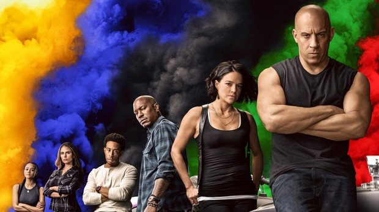
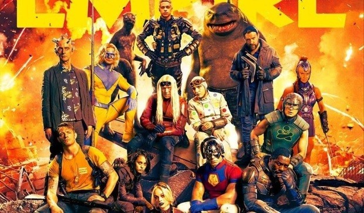
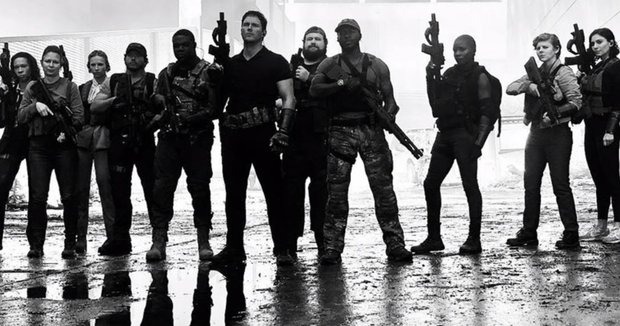
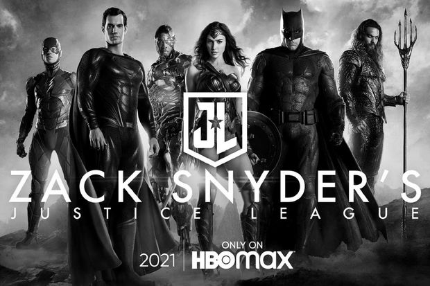

No 9º filme da aclamada franquia, veremos novas aventuras e corridas de tirar o fôlego da equipe
liderada por Dominic Toretto. E parece que o novo longa vai ultrapassar alguns limites no que condiz
a surpreender seus fãs. F9, como foi oficialmente intitulado, terá cenas no espaço. Para se ter
noção, uma das cenas de ação do novo longa tem apenas 4 segundo e demorou 8 semanas para ser gravada
(entre preparação, planejamento e gravação).
O elenco da produção conta com Vin Diesel, Michelle Rodriguez, Tyrese Gibson, Chris "Ludacris"
Bridges, Jordana Brewster, Nathalie Emmanuel e Sung Kang. Este será o anti-penúltimo filme da
franquia, que deve chegar ao fim no 11º longa..

Velozes e Furiosos 9
O Esquadrão Suicida 2
A DC decidiu dar mais uma chance à história do Esquadrão Suicida, após as reações negativas ao filme
de 2016. Embora não seja uma sequência deste longa, a nova produção conta com o retorno de alguns
dos atores do elenco original, como Margot Robbie, Viola Davis, Joel Kinnaman e Jai Courtney.
Além disso, outros nomes entraram para o grupo, a exemplo de Idris Elba, John Cena, Nathan Fillion,
Peter Capaldi, Pete Davidson, Alice Braga e Michael Rooker. O filme tem direção de James Gunn
(Guardiões da Galáxia)

O Esquadrão Suicida 2
The Tomorrow War
Este filme militar americano de ficção científica vai abordar uma guerra futurística. Quando os
humanos estão prestes a perder a batalha para alienígenas que invadiram o planeta, os cientistas
encontram um meio de trazer soldados do passado para lutar no futuro.
Prometendo muita ação de guerra, o longa conta com um elenco de peso formado por nomes como Chris
Pratt (que também trabalhou na produção executiva do filme), Yvonne Strahovski, Betty Gilpin, Keith
Powers, Mike Mitchell, Sam Richardson e J.K. Simmons.

The Tomorrow War
Liga da Justiça (Snyder cut)
Após o resultado de Liga da Justiça (2017), sob a direção de Joss Whedon, não agradar nada os fãs da
DC, surgiu um forte movimento pedindo a liberação do corte original do filme, o que teria sido
produzido ainda sob a direção de Zack Snyder. Esta campanha pela liberação do Snyder Cut, inclusive,
também foi uma espécie de protesto pela demissão do diretor na época e pela grande interferência dos
executivos da Warner Bros. no roteiro escrito por Snyder e Chris Terrio.
Dá para entender o motivo de toda a expectativa quando foi anunciado que o Snyder Cut seria liberado
no formato de um filme de 4h na HBO Max. Além da história originalmente pensada para a reunião dos
heróis, o filme contará com cenas muito aguardadas pelos fãs, como o uniforme preto do Superman, o
retorno do Coringa de Jared Leto e seu encontro com o Batman de Ben Affleck e um arco maior e de
grande importância para o herói Ciborgue.

Liga da Justiça (Snyder cut)